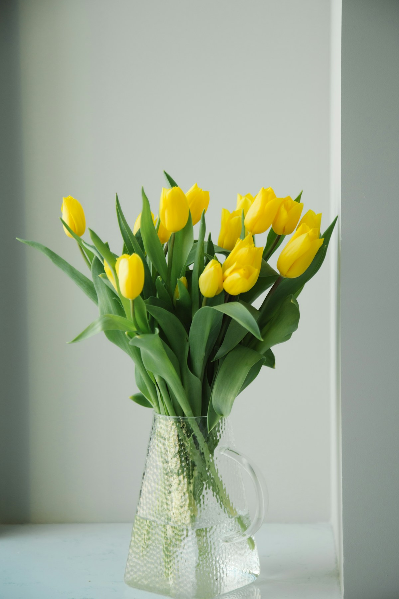
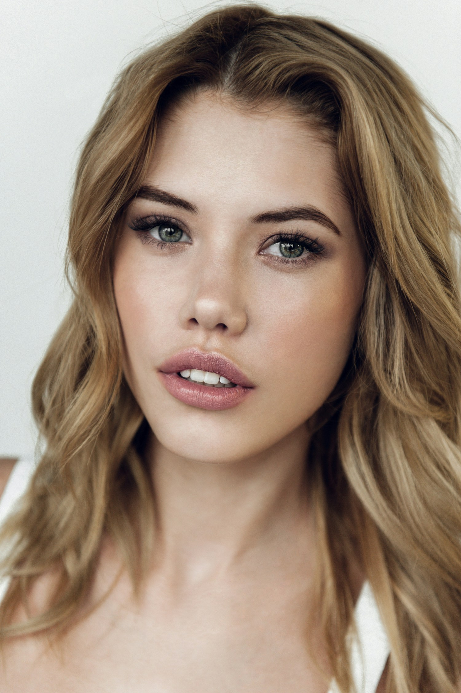

Чувства.
Чувства.Без лишних
слов.
01 / No words just flowers
Журнальная эстетика · крупная антиква · асимметрия
 Это вам,
Это вам,мадемуазель!
02 / Mademoiselle
Поп-арт · розовый и фисташковый · выбор повода

Немногоприроды.
03 / Kapusta
Ботаническая мастерская · зелёный · дневник настроений
 Рядом с домом.
Рядом с домом.Близко к сердцу.
04 / Верба
Тёплая локальная история · охра · планировщик букета

Искусствобыть собой.
05 / Олеся · брови
Beauty-редакция · тёмный оливковый · акцент на взгляде